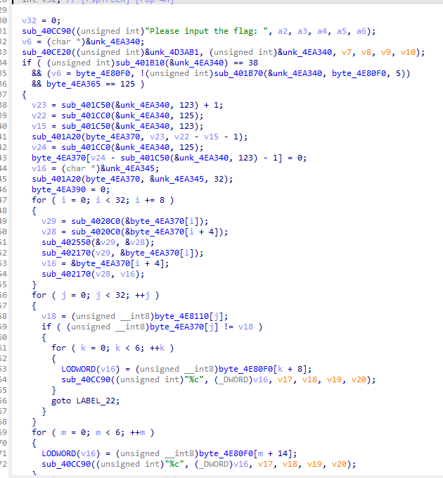
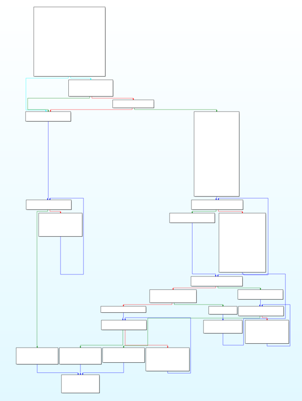
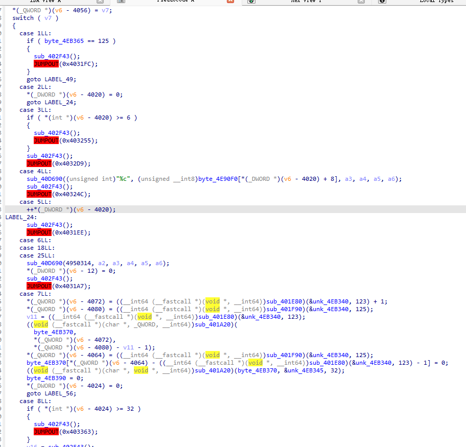
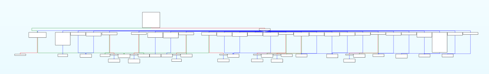

使用LLVM编写简单混淆Pass（一）
LLVM
LLVM 简介
简单来说，LLVM 是一个现代化的、模块化的编译器后端架构。
传统的编译器通常是“端到端”的（针对某种语言开发，直接生成某种机器码）。而 LLVM 将编译过程拆解为三个独立的部分：
- 前端 (Frontend)：将源代码（如 C++, Rust）翻译成一种通用的“中间语言” —— LLVM IR。
- 中端 (Optimizer)：对 LLVM IR 进行各种数学上的优化（比如代码混淆、死代码消除等）。由于 IR 是通用的，这一步的优化逻辑对所有语言都有效。
- 后端 (Backend)：将优化后的 IR 翻译成特定 CPU 指令（如 x86, ARM, RISC-V）。
LLVM的核心目标是提供一套可移植、模块化、可扩展的编译工具链，它能够支持多种硬件架构并进行代码优化。
LLVM Pass
LLVM 的 Pass 有中端 Pass（IR Pass）和后端 Pass（Machine Pass）两种
中端是 LLVM 最引以为傲的部分，它处理的是 LLVM IR，是硬件无关的优化；
后端的工作是将通用的 IR 转化为具体的机器码，从 IR 逐渐变为 SelectionDAG，最后变为 MachineInstr (MI)
LLVM IR Pass 允许针对代码的不同层级编写 Pass，常见的有：
- ModulePass：观察整个文件（全局变量、所有函数）。
- FunctionPass：一次只处理一个函数。这是最常用的，因为大多数优化都是在函数内部进行的。
- BasicBlockPass：只处理一个基本块（一串没有跳转的指令）。
- LoopPass：专门针对循环结构进行优化。
本篇的混淆就是实现的 IR Pass 中的 FunctionPass 。
控制流平坦化
原理
FLA 是现在非常常见的一种混淆手段了，通过打乱基本块之间的逻辑顺序从而模糊程序的执行逻辑，使得静态分析难度提高。
具体的原理讲解现在网上有很多文章，基本就是下面两图
混淆前：

混淆后：

实现
LLVM 版本：12.0.1
思路就是遍历并收集函数中所有原始的基本块，把它们存入一个列表，然后创建一个 switch 指令。根据状态变量的值，决定程序下一步跳转到哪一个原始基本块。
预处理
由于编写的 Pass 是 IR 层的，首先要处理一些特殊指令，比如异常处理：
1 | |
这样可以跳过 Invoke 和 LandingPad 这一对指令。
我们支持的大概有这些基本的跳转指令：
1 | |
后来发现 IR 中含有大量 PHI 节点，
PHI 节点会出现在基本块的开头，会根据上一个基本块来源于哪一个基本块决定对应的值，形如：
1 | |
需要把它转成一般汇编，思路是在前一个基本块结尾存储一个值，不同的来源存储的值不同，然后在 PHI 节点处把这个值取出来即可。
首先收集 PHI 节点：
1 | |
寻找合适的插入点：第一条非 PHI 指令：
1 | |
遍历所有 PHI 指令，
根据来源块编写 store 指令：
1 | |
然后收集所有使用该 PHI 的指令，并在它们的块中插入 load ：
1 | |
收集基本块
这里没什么好说的，收集除了入口块的所有基本块
1 | |
创建分发块
首先构建一个 switch 结构，检查 loadState 的值，并跳转到对应的基本块：
1 | |
然后遍历所有原始代码块，将它们的状态 ID 和对应的基本块地址填入 switch 的路由表里：
1 | |
关于 loadState 的值可以存储在全局变量或者栈上，我选择掺在代码段中，以达到更高的混淆程度。
创建中转块
设法存储分发块使用的 loadState 的值，并跳转回分发块，执行下一次分发。
1 | |
我使用的方法是将基本块 ID 插入到正常 opcode 中，然后通过 call 将 ID 压进栈，并打乱正常栈帧，破坏 IDA 的反编译
类似于：
1 | |
修改跳转指令
简单来说就是把 A -> B 改造成了 A -> 中转块(设置状态为B) -> 分发器 -> B 。
遍历所有基本块的结束语句，如果是函数结束（return）就正常结束，
1 | |
然后分别对 BranchInst ，SwitchInst ，IndirectBrInst 等进行处理，都是把 -> B 改写成 -> setB
1 | |
打乱基本块顺序
这里也比较容易实现，使用随机数打乱即可。
1 | |
修复问题
主要逻辑已经完善了，但是无法通过 LLVM IR 的 SSA 验证，因为代码块被打乱，在编译器看来变量可能未被定义就已经被使用
解决方案是把所有的寄存器变量降级为内存访问。因为栈是持久的，不受控制流打乱的影响。
先筛选所有受到影响的指令，标准为
- 跨块使用：在
Block A中定义，但在其他块（Block B,Block C…）中被引用； - 不是特殊指令：排除 PHI、Alloca、终结符等有自己处理逻辑的指令；
- 无副作用：确保转换不会改变代码原有的运行结果。
对于每一个需要修复的指令 I，在函数的入口块（Entry）创建一个 alloca 指令，在此处存入数据
最后在该变量被引用的地方按需加载。
还有一个问题：由于分发块是从内联汇编跳转到的，会被编译器识别为不可达基本块，从而被优化掉。
不过也容易解决，加入一个永假跳转，引用一下分发块即可。
效果
混淆前：
 混淆后：
反编译受到插入代码段的数据的影响未成功，并且流程图已经被破坏，没有收敛
待改进
- 每个基本块 ID 固定不变且按自然数排列
- 只有一个主分发器，缺失子分发器
参考资料
https://1ens.github.io/2024/11/29/LLVM%E5%85%A5%E9%97%A8/
https://bbs.kanxue.com/thread-288667.htm
https://ctf-wiki.org/reverse/obfuscate/control-flow-flatten/